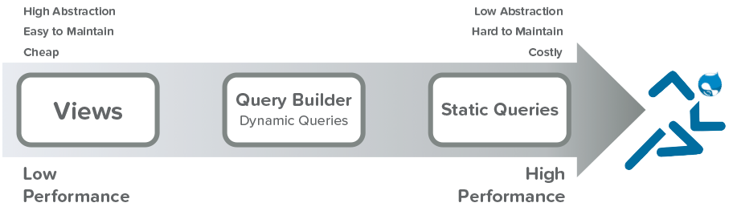
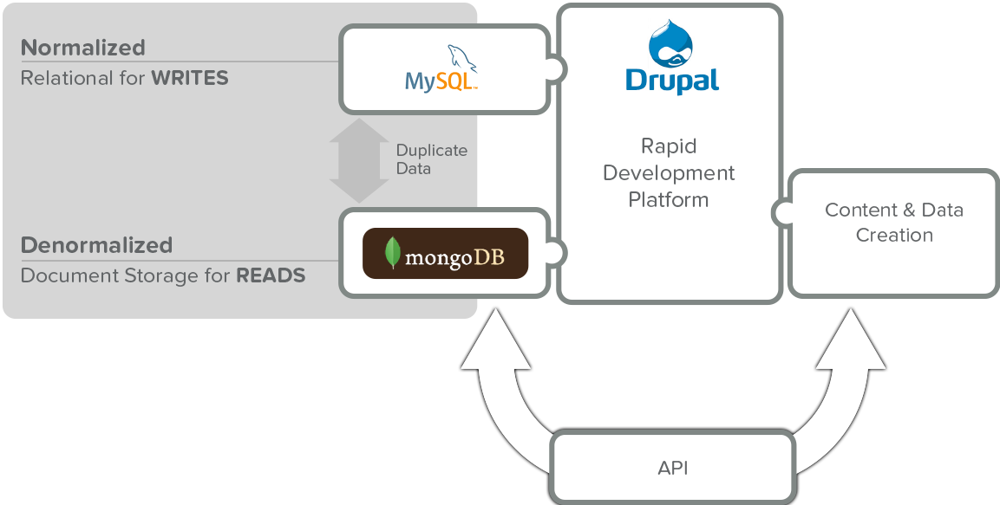

drupal as a data platform
session 1
Layering Drupal with emerging technologies to create a performant, scalable data purveyor.
Who we are
Diana Montalion Dupuis: @dianadupuis
Andrew Elster: @filmknurd
Sam Heuck: @samheuck
Astonish Design
We have a new website!
http://astonishdesign.com
Drupal
An open-source content management PHP/MySQL framework designed for rapid development of content-rich web applications.
REasons (Among many)
Growth: evolving tool
Foundation skill set
Users
"Big" Data
"Big" in relation to the amount of content Drupal is designed to manage
3 V's
Volume
Velocity
Variety
Content
Every kind of data
Comes from everywhere
Current Issues
Bootstrapping
Bottlenecks - Normalized - Join Happy
Lack of solution architecture
Who is the user
Visitors and editors
Data miners
Examples ...
Welcome to the future
When modularizing the architecture creates performant applications for all content and all users.

